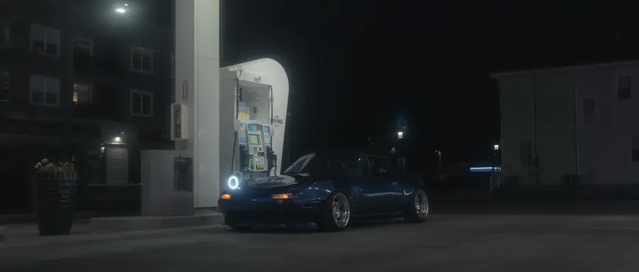
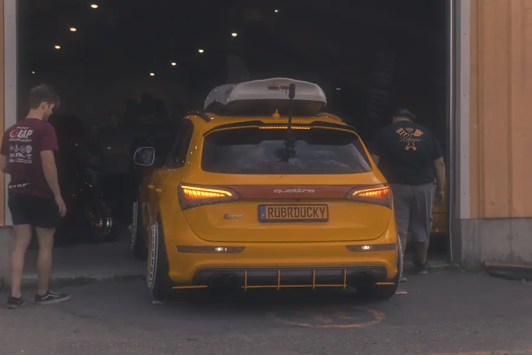

Car features
A session built around one car and its owner, from full statics to the small details.
See the Subaru Impreza GC8 featureAutomotive photography · New Brunswick, Canada
Car features, rolling shots, and show coverage across New Brunswick.

Mazda MX-5 Miata (NA) · UNB Fredericton
One NA Miata followed around UNB Fredericton as the light changed, shot with owner @savannasharp_7 and published as a joint post.


Four shoots, four kinds of work: a show floor, a truck on the move, a showroom feature and a poster series.
Six frames from six other shoots: details, fisheye floors, hard autumn sun and pink tent light.
Services
Four kinds of shoots. Each one links to an example from past work.
A session built around one car and its owner, from full statics to the small details.
See the Subaru Impreza GC8 featureShows and meets: the cars, the details and the people around them.
See Complex Union 2025Car-to-car photographs that show the build moving on the road.
See the Silverado rolling shotsA typeset poster that opens a set, with a headline and spec-sheet fine print.
See the Honda Accord coverMessage me to discuss rates, availability, and location.
Message @ln._photos on Instagram with the car, your preferred date and the location.
Talk through the time, place, availability and anything the shoot needs, right in the Instagram chat.
Arrange the session together. The shoot is confirmed once the details are agreed.
About
LN Photos is the automotive photography of @ln._photos, based in New Brunswick, Canada.
Every shoot is a collaboration with the people who build the cars. The MX-5, Silverado and Impreza sets were each published as joint posts with their owners, and show coverage credits the owners, shops and events tagged in each set.
The approach starts with the build, then looks for the light and the setting that suit it: a rooftop lot in daylight, low sun through the trees, a gas pump after dark. The details that make each car its own get their own frames.
“Close your eyes and make a wish.” From the @ln._photos bio

Book a shoot
Send the car, your preferred date, and the location. Let’s plan a shoot.
Opens a direct message to @ln._photos on Instagram. A message starts the conversation; the shoot is booked once the details are agreed. You can also visit the Instagram profile